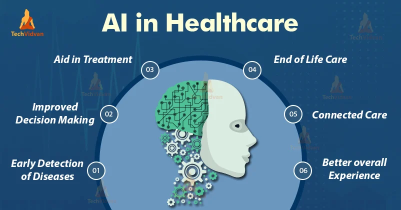
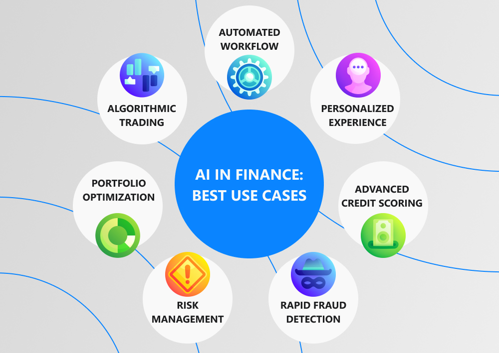

Artificial Intelligence (AI) refers to the development of computer systems that can perform tasks that typically require human intelligence. These tasks include learning, reasoning, problem-solving, understanding natural language, speech recognition, and visual perception. AI aims to create machines that can mimic cognitive functions and adapt to new information, allowing them to perform tasks without explicit programming.
Types of AI
Narrow AI
- 1) Specific Task Focus: Designed to excel in a specific task or a narrow set of tasks.
- 2) Limited Domain Expertise: Demonstrates expertise within a specific domain.
- 3) Examples: Virtual personal assistants, recommendation systems, chatbots, autonomous vehicles.
- 4) No Consciousness or Self-Awareness: Lacks consciousness and self-awareness.
- 5) Practical Applications: Widely used in data analysis, language translation, image recognition, and automation.
General AI
- 1) Human-Like Cognitive Abilities: Aims to mimic the broad cognitive abilities of humans.
- 2) Adaptability and Learning: Possesses adaptability and learning capabilities.
- 3) Examples: Theoretical concept; not implemented in practical applications yet.
- 4) Consciousness and Self-Awareness: Theoretically has consciousness and self-awareness.
- 5) Complex Problem Solving: Capable of tackling complex problem-solving tasks.
Applications
Healthcare
- Diagnosis and Treatment: AI aids in medical imaging analysis for early disease detection.
- Drug Discovery: AI accelerates drug development by analyzing large datasets.
- Personalized Medicine: AI tailors treatment plans based on individual patient data.
Finance
- Algorithmic Trading: AI analyzes market trends and executes high-speed trades.
- Fraud Detection: AI identifies unusual patterns in financial transactions.
- Customer Service: AI-powered chatbots provide personalized financial advice.